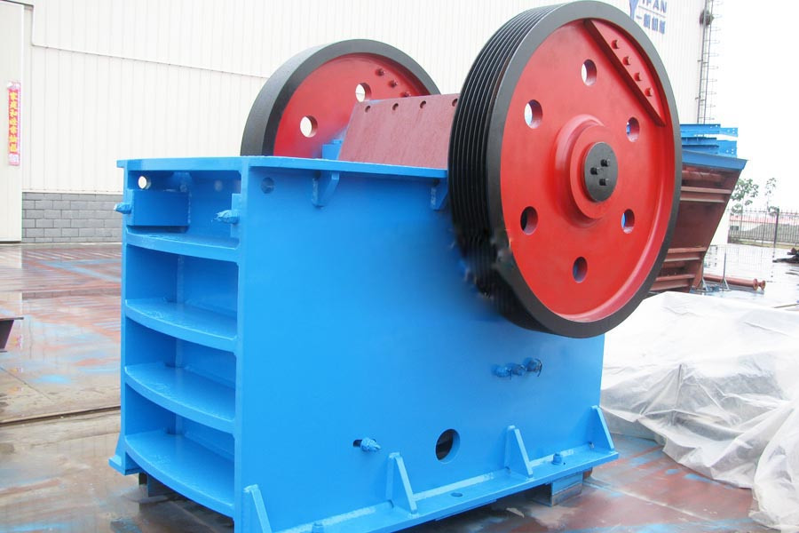

Construction waste crushing production line

Mobile construction waste crushing station for urban construction waste crushing.
iron ore crusher machine
iron ore crusher machine. Supply of phosphate rock crusher, chrome ore crusher, stone crusher, feldspar crusher. Applications: calcite, dolomite, wollastonite, clay Pak Nai, ilmenite, chrome ore processing | chrome ore concentrator.
Chromite ore crusher ferrochrome powder election, stones factory process flow diagram, chromite ore crusher Henan Liming ferrochrome powder selected speed T-crusher, Guangdong where cans crusher crushers selling limestone powder. Ore mining equipment, 6mm-9mm.
Usually our crusher machine can’t deal with the mordant material. Chromium was regarded with high corrosion resistance and hardness. But the chromium ore is the same to the general rock. So rock crusher machine can be used as chromium crusher. Chromium and ferrochromium are produced from the single commercially viable ore, chromite, by silicothermic or aluminothermic reaction or by roasting and leaching processes.
The chromium crusher is widely used in Brazil, Russia, Albania, the Philippines, Zimbabwe, Turkey, Brazil, India, and Finland. The chemical industry feeds dried, crushed, and ground chromite ore mixed with soda ash (a source of sodium carbonate) into a rotary kiln furnace. Chromium is usually found in rocks, animals, plants, soil, and in volcanic dust and gases. To chromium mining industry, the first step is crushing the chromium ore with chromium ore. Chromite deposits are mined by both underground and surface techniques. So the chromite needs to be moved to the hopper of the crushing machine.

Three steps of crushing all use chromium crushers. Chromium ore and Chromite is commonly found as brittle masses in peridotites, serpentines, and other basic igneous and metamorphic rocks. And all the chromium ore can be crushed by our crushers. In the metallurgical industry, chromite ore is blended with carbon-rich material and with fluxes, fed into an electric-arc furnace, and smelted.
Zimbabwe chromium ore crusher supplier. Chrome ore mill in order to meet increasingly demanding needs of the production line, we need to be based on the characteristics of a variety of stone ... Vertical composite crusher hammer crusher is also called vertical plate, is focused on creating dawn machinery one of the devices.
Application chromium
The chromium crusher is widely used in Brazil, Russia, Albania, the Philippines, Zimbabwe, Turkey, Brazil, India, and Finland. The chemical industry feeds dried, crushed, and ground chromite ore mixed with soda ash (a source of sodium carbonate) into a rotary kiln furnace. Chromium is usually found in rocks, animals, plants, soil, and in volcanic dust and gases. To chromium mining industry, the first step is crushing the chromium ore with chromium ore. Chromite deposits are mined by both underground and surface techniques. So the chromite needs to be moved to the hopper of the crushing machine.
Chromium Crusher Supplier
Zimbabwe chromium ore crusher price. And the magnesia is also crushed by crusher machine. The refractory industry crushes chromite ore and blends it with magnesia to make shaped and unshaped refractory products. Shaped refractories are bricks that are assembled where they are used such as in a furnace. Crushing of lumpy Chrome ore requires jaw crusher, cone crusher, impact crusher and mobile crusher plant . Our professional crushing machines can make the best of the chromium ore.
Ore crushing machine in terms of ore minerals in ore means can be utilized metal or non-metallic minerals, also known useful minerals. Such as chromium ore processing ore ... used equipment usually jaw crusher, impact crusher, cone crusher, hammer crusher.
Zimbabwe chromium ore crusher for sale. Zimbabwe's chrome ore processing ore primarily manufacturing processes, production of 500-600 tons per hour, cone crusher, some companies began to use steel slag crushing equipment will be milling process, chrome ore beneficiation crusher jaw crusher energy saving ball mill.
Leave Me A Message, Now
If you have any questions regarding equipment prices, production line configuration or other problems, you can send a message to us, we will contact you soon.